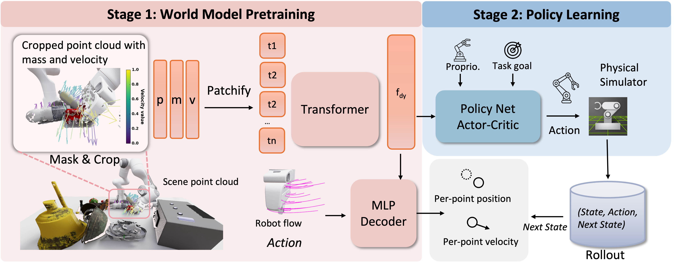
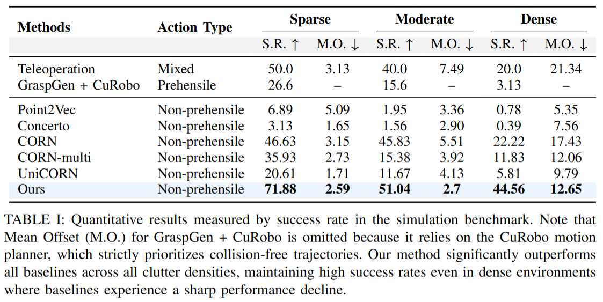

Emerging Extrinsic Dexterity in Cluttered Scenes via Dynamics-aware Policy Learning


DAPL use a two-stage learning framework. Stage 1 (world model pretraining): the model takes as input a cropped point cloud augmented with physical attributes (e.g., mass and velocity). A Transformer-based encoder maps these inputs into a dynamics representation \(f_{dy}\), and a conditional MLP decoder predicts future per-point positions and velocities conditioned on robot actions (e.g., \(a_{1:H_a}\)). Stage 2 (policy learning): the pretrained dynamics features \(f_{dy}\) are fed into an actor-critic policy together with proprioceptive observations and task goals, enabling efficient policy learning in a physics simulator.
Clutter6D defines three difficulty tracks based on clutter density: Sparse (4 objects), Moderate (8 objects), and Dense (12 objects). The Sparse track contains 1,024 training scenes, and each track includes 128 held-out scenes for evaluation.


Our method achieves higher sample efficiency than geometric baselines, reaching \(\approx\)$70\%$ success within the first $10^4$ iterations.
On Clutter6D, our method consistently outperforms all baselines, achieving 71.88% success in sparse scenes (vs. 46.63% for CORN) and 44.56% in dense scenes where our dynamics-aware method doubles the success rate of the strongest baseline (22.22%) in dense scenes.
We evaluate our approach extensively in simulation on the Clutter6D benchmark and additionally test our model in real-world cluttered scenes.
We further visualize world model predictions and observe close agreement with ground-truth object motion in the visualization section, confirming the quality of learned dynamics.
By varying only object mass under identical configurations, our policy generates adaptive manipulation strategies that ensure successful interaction while minimizing environmental disturbance.
Integrated with the VLM planner, our policy empowers Galbot with critical pre-grasping skills. By leveraging extrinsic dexterity to reorient objects in cluttered shelves, it transforms ungraspable states into grasp-friendly configurations, overcoming reachability constraints.
@misc{zheng2026dapl,
title={Emerging Extrinsic Dexterity in Cluttered Scenes via Dynamics-aware Policy Learning},
author={Yixin Zheng and Jiangran Lyu and Yifan Zhang and Jiayi Chen and Mi Yan and Yuntian Deng and Xuesong Shi and Xiaoguang Zhao and Yizhou Wang and Zhizheng Zhang and He Wang},
year={2026},
eprint={2602.04215},
archivePrefix={arXiv},
primaryClass={cs.RO},
url={https://arxiv.org/abs/2602.04215}
}